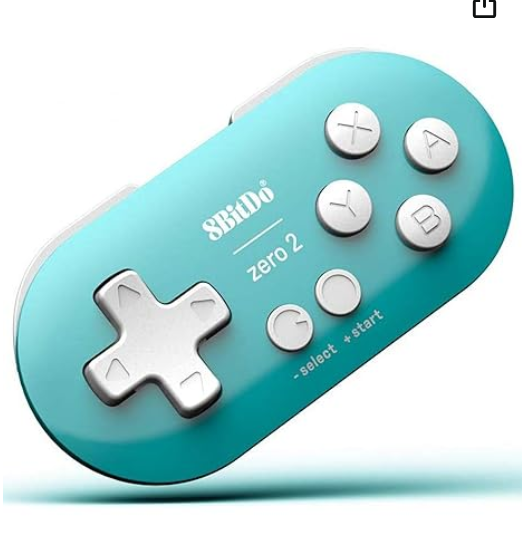
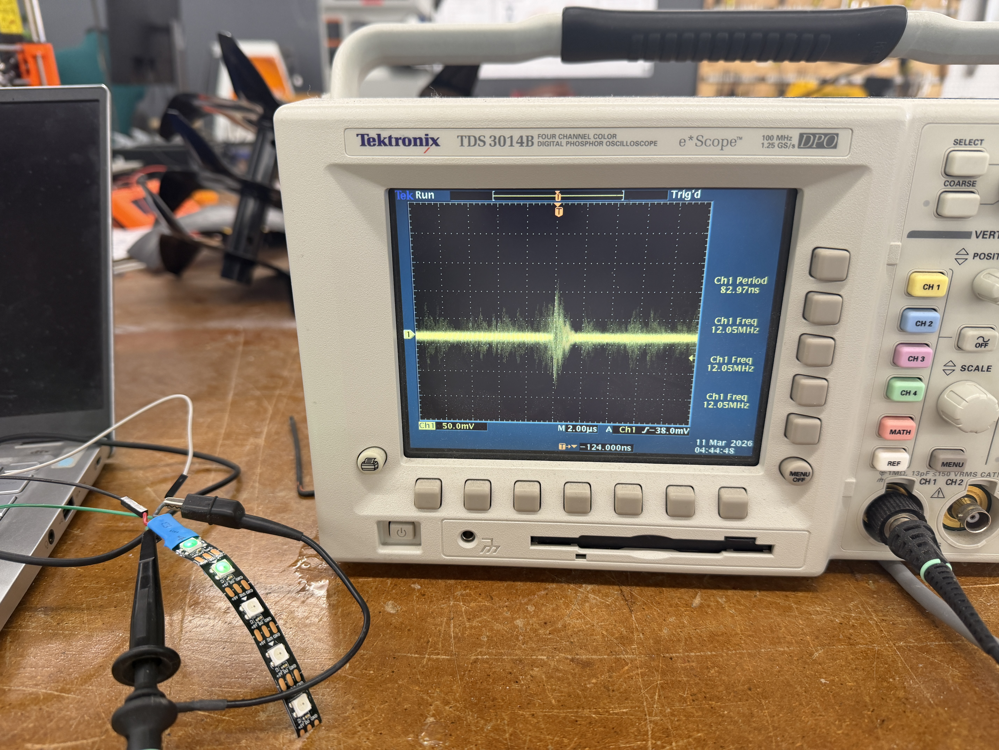
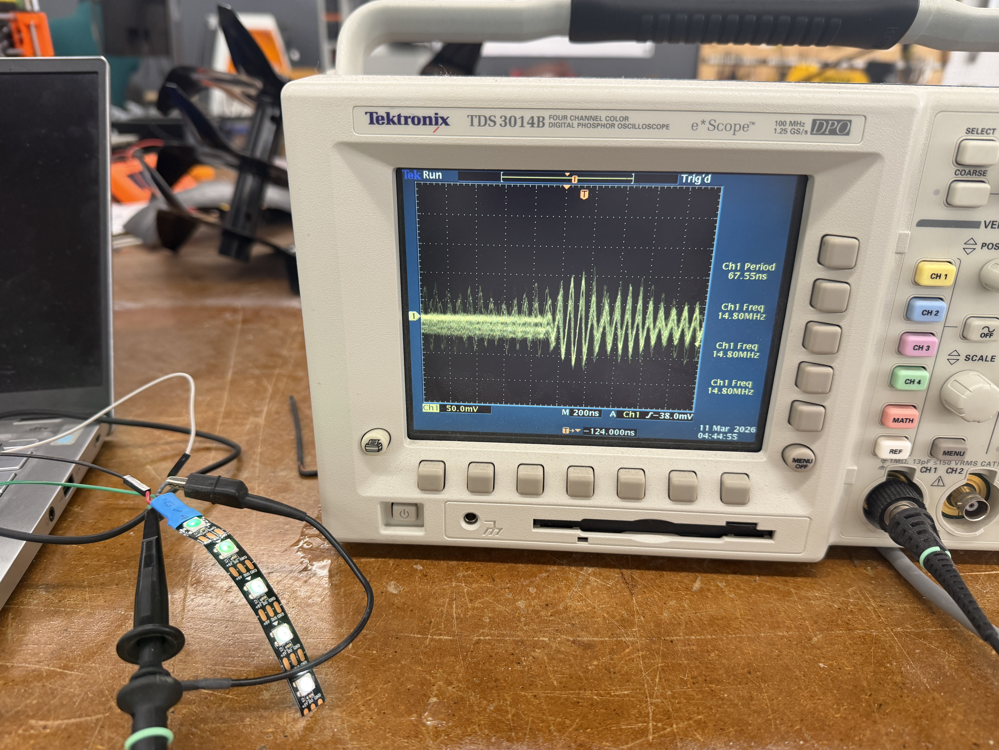
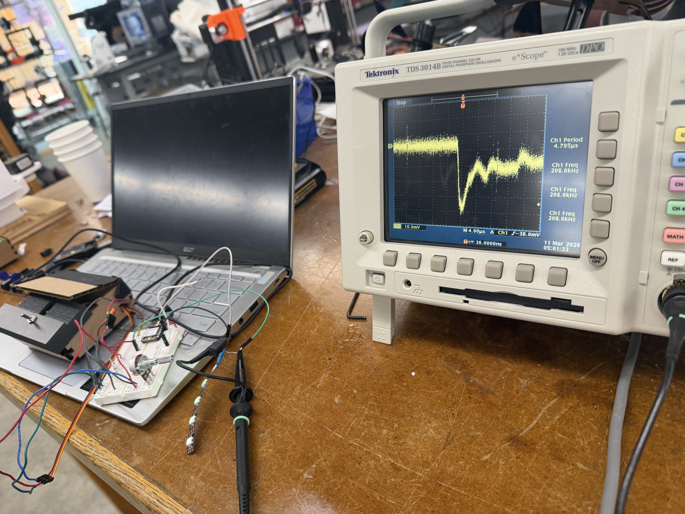

<div class="textcontainer">
<p class="margin"> </p>
<h3>Week 7: Electronic Outputs</h3>
<h4>Assignment: Minimum Viable Product for Final Project</h4>
For my minimum viable product, I tried to make an Anki clicker. Many commercial ones look like this:
<figure>
<p></p>
<figcaption> A commercial Anki clicker
</figcaption>
</figure>
<br><br>
Inspired by the pad of buttons on the right side of the controller and after finding buttons I liked in the PS70 lab, I started CADding. For the first prototype, I wanted to try for a simple shape similar to the controller that would be comfortable to hold. After the print went halfway, I quickly realized it would be too big and stopped the print.
The buttons fit though which is exciting! Shoutout tolerance +.3 to the caliper measurements.
<figure>
<img src="./First design of MVP.JPG" alt="My first try for my Anki clicker that looks like a video game controller" width=33% height=10%>
<img src="./Soldered buttons.JPG" alt="Soldered buttons" width=33% height=10%>
<figcaption> MVP Try 1 (L) and soldered buttons (R)
</figcaption>
</figure>
<br><br>
The next try involved a more egronomic design. The print ran out of filament part of the way through creating this cool multicolored effect.
<br> Pros: the buttons still fit and I could hold it in my hand
<br> Cons: it wasn't very comfortable and when I pushed the buttons they just popped through the device
<figure>
<img src="./Second MVP design on printer.JPG" alt="The second Anki clicker try" width=33% height=10%>
<img src="./Second MVP design with buttons.JPG" alt="The bottom side of the second Anki clicker try" width=33% height=10%>
<figcaption> MVP Try 2 (L) and MVP Try 2 bottom side (R)
</figcaption>
</figure>
<br><br>
Third try is the charm as they say. To keep the buttons in place, I designed a cross bar system where I would slide the buttons in the top piece and the crossbars beneath would hold the buttons in place. This did mea I had to thread the wires individually through the crossbars which was hard. I used screws to join the parts.
<br> Pros: the buttons didn't move when pressed and it was holdable
<br> Cons: it still wasn't very comfortable to hold, the wiring was clunky and external, and testing revealed I would need at least two more buttons for forwards and backwards.
<figure>
<img src="./MVP no buttons.JPG" alt="The third Anki clicker try skeleton" width=30% height=10%>
<img src="./MVP on breadboard.JPG" alt="The third Anki clicker try assembled" width=30% height=10%>
<img src="./Bottom half MVP with buttons.JPG" alt="MVP try 3 with buttons" width=30% height=10%>
<figcaption> MVP Try 3 skeleton (L), MVP Try 3 assembled (C), and MVP Try 3 showing buttons and cross section
</figcaption>
</figure>
<br><br>
And here is a video of the MVP using its Bluetooth connection to control Anki on the computer! This was the first moment I felt I might be getting somewhere on the project.
<figure>
<iframe src="https://drive.google.com/file/d/1iaUgJ0ASvyoowDSb7zcZ1yyCJOfbAbEd/preview" width="640" height="480"></iframe>
<figcaption> The MVP in action
</figcaption>
</figure>
<h4>Oscilloscope</h4>
We also learned how to use oscilloscopes in class, something I was familiar with thanks to PS12a and PS12b (mechanics & E&M for engineers). I tried to look at the frequency of a LED strip and found it was complicated. I had the most success at frequencies of nanoseconds to microseconds.
<figure>
<p></p>
<p></p>
<p></p>
<figcaption> Many different patterns were found in the oscilloscope but none were truly regular...
</figcaption>
</figure>
</div>